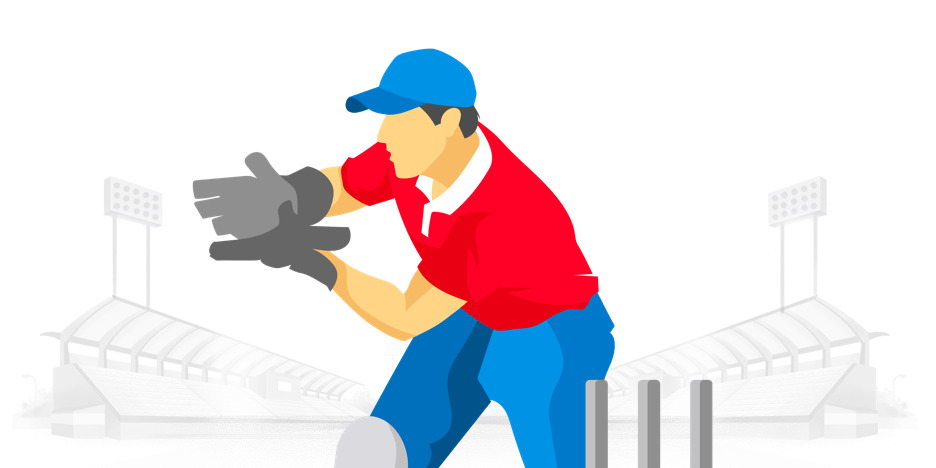

Super 11 Point System
Batting Points

| Being a part of the starting XI | +4 |
|---|
| Every run scored | +1 |
|---|
| Every 4 Run's | +1 |
|---|
| Every 6 Run's | +2 |
|---|
| Dismissal for a Duck (only for batsmen, wicket-keepers and all-rounders) | -2 |
|---|
Bowling Points
| Every wicket taken (excluding run out) | +25 |
|---|
| Bonus (LBW / Bowled) | +8 |
|---|
| 3 Wicket Bonus | +4 |
|---|
| 4 Wicket Bonus | +8 |
|---|
| 5 Wicket Bonus | +16 |
|---|
| Maiden Over | +12 |
|---|
| Caught & Bowled | +33 |
|---|
Fielding Points

| Catch taken | +8 |
|---|
| 3 Catch Bonus | +4 |
|---|
| Stumping | +12 |
|---|
| Run out (Direct hit) | +12 |
|---|
| Run out (Not a direct hit) | +6 |
|---|
Caption & Vice-Caption Points
Economy Rate Points
| Below 5 runs per over | +6 |
|---|
| Between 5-5.99 runs per over | +4 |
|---|
| Between 6-7 runs per over | +2 |
|---|
| Between 10-11 runs per over | -2 |
|---|
| Between 11.01-12 runs per over | -4 |
|---|
| Above 12 runs per over | -6 |
|---|
| Strike Rate (Except Bowler) Points, (Min 10 Balls To Be Played) |
|---|
Strike Rate Points(Min 10 Balls Faced)
| Above 170 runs per 100 balls | +6 |
|---|
| Between 150.01-170 runs per 100 balls | +4 |
|---|
| Between 130-150 runs per 100 balls | +2 |
|---|
| Between 60-70 runs per 100 balls | -2 |
|---|
| Between 50-59.99 runs per 100 balls | -4 |
|---|
| Below 50 runs per 100 balls | -6 |
|---|